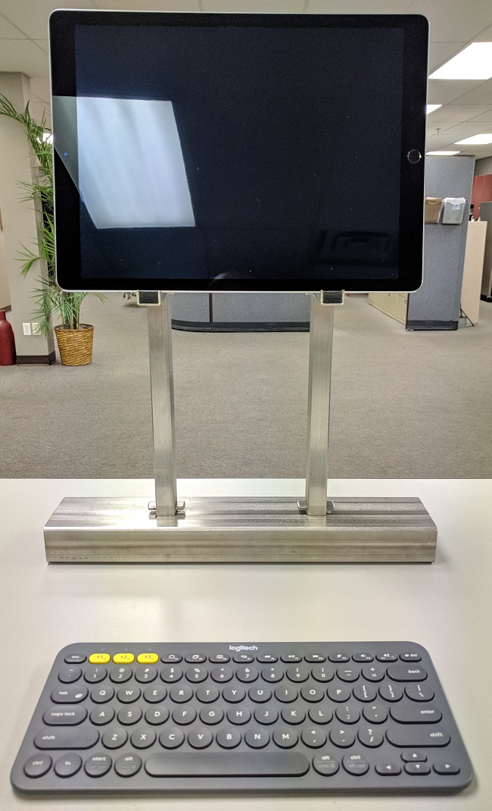
I love my iPad Pro. It's light and powerful. With the Smart Keyboard cover and the Pencil, I can use my iPad for nearly all of my computing needs, with access to a Virtual Private Server for more complex technical tasks.
But it's not a perfect story. Whenever I attempt to use my ipad for extended periods of time, I start to feel some neck pains. Unfortunately I have no way to adjust the screen's positioning beyond simply sliding it around my desk. It sure would be nice to have my iPad sit at eye level while I type.
My solution: purchase a bluetooth keyboard to allow de-coupled typing and then design and build a nice looking stand to put the iPad on so I can work with my neck in a comfortable position.
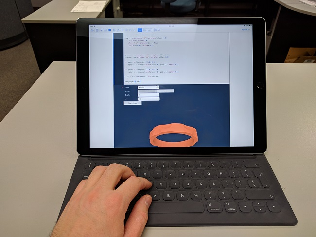
Sometimes, simplicity isn't quite comfortable enough.
This post details the steps I took to create an ipad stand for myself. It includes my designs as well as photos and explanations of the manufacturing process. Since my design uses a CNC Laser machine, it is unlikely to be easily replicated by the average person. To be clear, that's not because others don't necessarily have the skill to do so, it's purely a matter of access to machinery. The design, as it turns out, isn't too complicated.
This post contains python code that is meant to be used with the CadQuery library. It's a script-based CAD system built upon FreeCAD, an open source CAD package. I also created this inside a Jupyter Notebook context and use a python module of my own making to integrate CadQuery into the Notebook environment. It's not perfect, but it works well enough.
In this post I have several iframes which are linked to a few a-frame VR scenes. I use these to showcase the parts in browser. It's actually a VR-ready library, so you can actually view the objects in VR if you've got access to that sort of thing. Pleaes don't get your hopes up, I haven't spent much time with the library, so there's a good chance I've done things non-optimally. Personally, I recommend viewing the parts in browser without VR.
All links to the mentioned software:
And, if you'd like to get a feel for CadQuery in the context of a Jupyter notebook, you can check out https://trycadquery.com. It's a minimal server, set up by me, an admitted novice when it comes to, well, most things, actually. So, please be gentle.
I've attached a few things that you're welcome to download, details and links listed below:
With any small project, I end up loosely following a process. It's not scientific and I don't strictly monitor adherence to the steps. Over time as I learn more design skills (by failure more often than not) my process morphs in the small details. However, the broad strokes change much more slowly, so I can generalize them here.
Looking through the stainless steel scrap bin, I was able to find some cool tube material.
The base, I realized, could be made from some thick, heavy tube to counter-balance the iPad's weight.
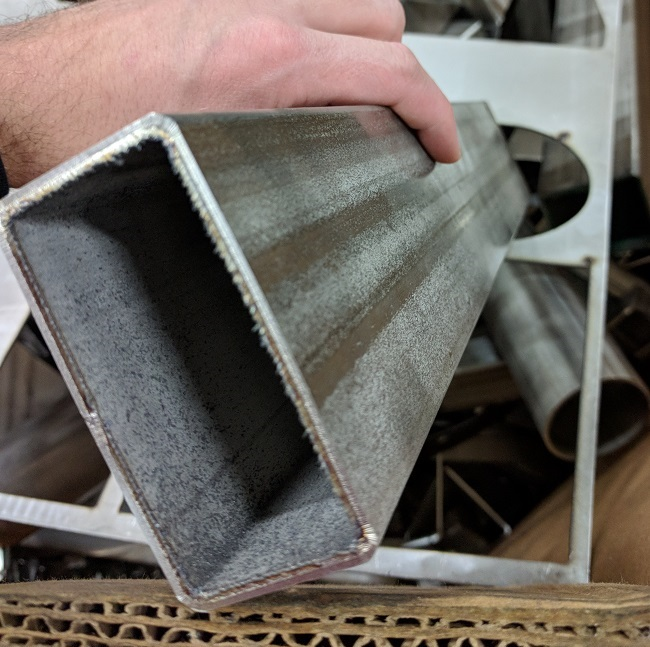
From that base I could make 2 verts from some lighter tube material. Off the verts would be the support arms from the same material.
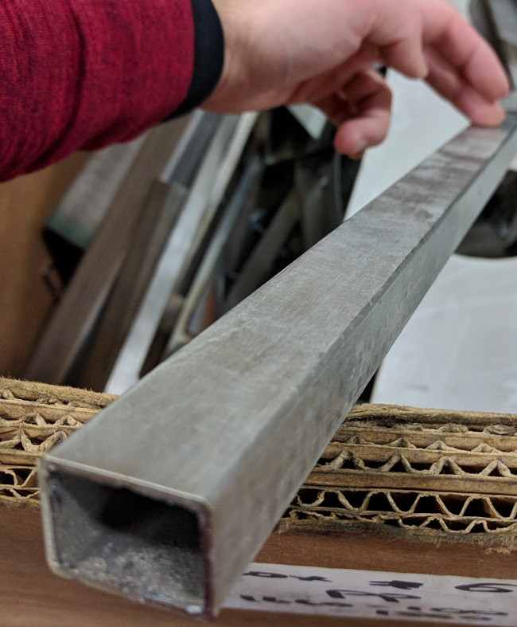
That's all the material I need! I love it when a plan comes together like that.
Since the design is going to use tubes, it makes sense to define a simple function to quickly create them. In this case, I know that I only want to use rectangular tubes, so I'll define a function that takes:
Edge radius of the tube is going to be internally defined in the function for simplicity. In actuality, the radius may not strictly be computable from the given dimensions. In such situations, a lookup table of radius values would have to be employed. Since these parts will only be dealt with in very small quantity, I don't care to build a whole database of materials and will simply make an assumption about the radius.
For a personal project, that'll be just fine.
def rect_tube(b, h, t, L):
# Define tube's edge radius according to thickness
r = t*1.5
# Set up the workplane for the tube's profile
end_plane = cq.Workplane('XY').workplane(offset=-L/2.0)
tube = (end_plane
.rect(b, h, centered=True).extrude(L)
.edges('|Z').fillet(r)
)
inner = (end_plane
.rect(b-(t*2.0), h-(t*2.0), centered=True).extrude(L)
.edges('|Z').fillet(r-t)
)
tube.cut(inner)
return tube
The base's material is a 3.0 x 1.5 x 0.125in tube. The keyboard I bought is about 13in wide, so I'll make the base 15in long, to have a nice 1in extension past the keyboard's edges.
I think that'll look nice.
# measurements in inches
base = (rect_tube(3.0, 1.5, 0.125, 15.0)
# select bottom of tube
.faces('<Y').workplane()
# create access holes to fit a socket wrench
.moveTo(0.0, 3.0).hole(0.85, 0.2)
.moveTo(0.0, -3.0).hole(0.85, 0.2)
# select top of tube
.faces('>Y').workplane()
# top holes to allow 5/16in bolt through
.moveTo(0.0, 3.0).hole(0.316, 0.2)
.moveTo(0.0, 3.375).rect(0.9, 0.075)
.moveTo(0.0, 2.625).rect(0.9, 0.075)
.moveTo(0.0, -3.375).rect(0.9, 0.075)
.moveTo(0.0, -2.625).rect(0.9, 0.075).cutBlind(-0.2)
.faces('>Y').workplane()
.moveTo(0.0, -3.0).hole(0.316, 0.2)
)
show_object(base)
FYI, you can interact with the above object (and all others in the post). Right-Click and drag to pan. Lef-Click and drag to rotate.
The base tube has 2 mounting locations for the vertical tubes. On the face that will become the bottom of the stand are 2 0.85in diameter holes which are wide enough to allow a socket wrench to pass through.
On the top of the base are 2 mount points, each of which have a 0.3125in hole centered between two thin slots, which are sized and positioned to interface nicely with tabs cut on the vertical tubes.
This interface will be easier to understand in the assembly views later.
Now that we've prepared a base, it's time to make the vertical arms that will actually hold the iPad up at a comfortable height.
I want to keep my neck fairly straight while using this, and prefer to maintain a good posture while I work, so I'll set things fairly high up.
The benefit of a high stand is that I could also move it to a standing desk and still have the screen located at a decent height, requiring only a minor angle to my neck.
At least, that's the theory. I'll find out in practice if the height's good. At least I can always re-build the stand, if it comes to it. Let's plan for success, though.
vert = (rect_tube(1.0, 0.75, 0.065, 16.0)
# select side of tube
.faces('<X').workplane(centerOption='CenterOfBoundBox')
.moveTo(0.0, 1.0).hole(0.3125)
.faces('>Y').workplane(centerOption='CenterOfBoundBox')
.moveTo(-0.5, 1.4)
.lineTo(-0.4, 1.4)
.lineTo(-0.25, 1.0)
.lineTo(-0.4, 0.6)
.lineTo(-0.5, 0.6).close().cutBlind(-0.1)
.faces('<Y').workplane(centerOption='CenterOfBoundBox')
.moveTo(0.5, 1.4)
.lineTo(0.4, 1.4)
.lineTo(0.25, 1.0)
.lineTo(0.4, 0.6)
.lineTo(0.5, 0.6).close().cutBlind(-0.1)
.faces('>Y').workplane(centerOption='CenterOfBoundBox')
.moveTo(-0.4, -7.0)
.lineTo(-0.4, -8.1)
.lineTo(0.0, -8.25)
.lineTo(0.4, -8.1)
.lineTo(0.4, -7.0).close().extrude(-0.065)
.faces('<Y').workplane(centerOption='CenterOfBoundBox')
.moveTo(-0.4, -7.0)
.lineTo(-0.4, -8.1)
.lineTo(0.0, -8.25)
.lineTo(0.4, -8.1)
.lineTo(0.4, -7.0).close().extrude(-0.065)
)
show_object(vert)
To actually hold the iPad up, some horizontal support arms will be necessary. It's sensible to use the same tube as is used for the vertical components, because it eliminates the need to change the machine over to a different material size a third time. It also looks quite nice when parts have a smooth interface between them. By that I simply mean that I like it when things line up.
The iPad's angle shouldn't be too great, either, so that's a design consideration. The closer to vertical the better, since the screen is already going to sit at eye level. But, since this stand will be relying solely on gravity, it would be unstable to design the iPad to sit perfectly vertical. It would fall over.
So, I'll make a horizontal arm that extends out about 2 inches and provides a small lip for the iPad to catch on, preventing sliding. The vertical supports will serve as the backrest, preventing it from falling backwards.
Foam will be placed on all metal surfaces that will come in contact with the device; I don't want scratches on my nice toys!
support = (rect_tube(1.0, 0.75, 0.065, 2.0)
.faces('>Y').workplane(centerOption='CenterOfBoundBox')
.moveTo(0.0, -0.75)
.rect(0.635, 0.152).cutBlind(-0.8)
.faces('>Y').workplane(centerOption='CenterOfBoundBox')
.moveTo(0.0, -0.634)
.rect(0.375, 0.08).cutBlind(-0.2)
.faces('>Y').workplane(centerOption='CenterOfBoundBox')
.moveTo(0.0, 1.0)
.lineTo(0.0, 0.85)
.lineTo(-0.15, 0.8375)
.lineTo(-0.05, 0.0)
.threePointArc((0.141, -0.353), (0.5, -0.5))
.lineTo(0.5, 1.0).close().cutBlind(-0.8)
.faces('>Y').workplane(centerOption='CenterOfBoundBox')
.moveTo(-0.4, -0.9)
.lineTo(-0.4, -1.1)
.lineTo(0.0, -1.25)
.lineTo(0.4, -1.1)
.lineTo(0.4, -0.9).close().extrude(-0.065)
.faces('<Y').workplane(centerOption='CenterOfBoundBox')
.moveTo(-0.4, -0.9)
.lineTo(-0.4, -1.1)
.lineTo(0.0, -1.25)
.lineTo(0.4, -1.1)
.lineTo(0.4, -0.9).close().extrude(-0.065)
)
show_object(support)
Now that all of the parts are designed, it's time to assemble them. Luckily, I can use a 'naive' assembly approach to visualize what the final product will look like.
I say naive because I am explicitly providing a translation and set of rotations to each object. This differs from how most CAD packages create assemblies because there is no connection between the parts, as far as the program is concerned. If one part is moved, no other parts are moved relative to this. For small projects, this works well enough, but as design complexity increases, it might become valuable to add constraint solvers and an assembly mating system. A project for another day, I think.
I'm also using 2 different assemblers. The first relies on .json files and a-framevr to display the assembly in browser. The second relies on .step files and combines them into a new step file with a compound part structure, which sort of works as an assembly.
The .json assembly is lossy, as the parts have to be tessellated to display through the webgl framework. The .step assembly is lossless, as STEP files use brep (boundary representation) to store geometrical data. Importing the step files into another CAD program will allow you to make modifications without concern for rounding issues.
import cqjupyter_extras as cqe
import cqtools
asm = [
['base', '0 0 0', '0 0 0' ],
['vert', '0 222.25 76.2', '270 0 0' ],
['vert', '0 222.25 -76.2', '270 0 0' ],
['support', '38.1 247.65 76.2', '0 90 270' ],
['support', '38.1 247.65 -76.2', '0 90 270' ],
]
cqe.cqassemble(asm, name='support')
base_part = cqtools._loadSTEP('base.STEP')
vert_part = cqtools._loadSTEP('vert.STEP')
support_part = cqtools._loadSTEP('support.STEP')
asm2 = [
base_part.findSolid(),
(vert_part
.rotate((0,0,0), (1,0,0), 270)
.translate((0, 76.2, 222.25))
.findSolid()
),
(vert_part
.rotate((0,0,0), (1,0,0), 270)
.translate((0, -76.2, 222.25))
.findSolid()
),
(support_part
.rotate((0,0,0), (0,1,0), 90)
.rotate((0,0,0), (1,0,0), 270)
.translate((38.1, 247.65, 76.2))
.findSolid()
),
(support_part
.rotate((0,0,0), (0,1,0), 90)
.rotate((0,0,0), (1,0,0), 270)
.translate((38.1, 247.65, -76.2))
.findSolid()
),
]
# Some weird syntax to properly create the compound geometry
# There is likely a cleaner way to do this, but I'm unaware currently
final = cq.cq.Compound.makeCompound(asm2)
final = cq.CQ(final)
show_object(final)
After design comes preparation, including computer-aided manufacturing (CAM) and machine preparation.
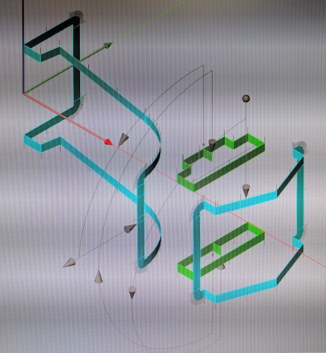
Each piece must be put through the CAM software to properly convert the 3D designs into instructions that the CNC laser can follow. On screen, such instructions are visualized as tool paths which the laser will follow around the tube.
The laser looks like a cool machine when it's running, and that's because it is cool. However, patience and attention to detail are required to make sure you don't damage your equipment and/or make parts incorrectly. This is especially true considering the cost of maintenance of such machinery, and the relative speed at which parts can be made. If something is wrong, you run the risk of making the same mistake multiple times, very rapidly. That scrap gets costly!
Fortunately for me, I'm running a total of 1 ipad stand jobs, using only scrap materials, so some of that pressure is off. That's still no reason to let your attention slip, though, and I always do my best with design and machine use.
I managed to make all necessary parts without issue and the results were, in my own (admittedly biased) opinion, rather awesome!
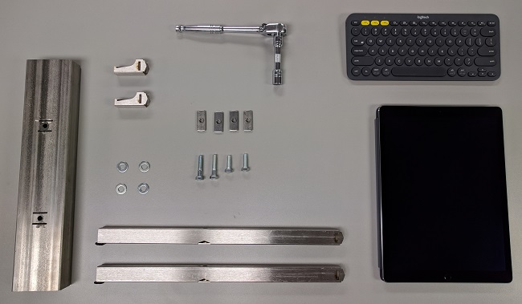
Once my parts were cut and knolled sufficiently, I was ready to assemble everything. You'll notice the nuts and bolts used to assemble the stand in the picture above as well. It's just some 5/16in bolts and 'weld tab' nuts that I have at the shop here. They slot nicely into the tubes (as planned) and are easy to reach and tighten with the appropriate socket + ratchet combination.
You will notice in the assembly images that I also added some foam to the supports and verts where the ipad rests. This is to avoid scratching. The foam is actually just some small pieces of weather stripping that you typically use around a window frame so that wind doesn't get in through the cracks.
Check out the assembly process:
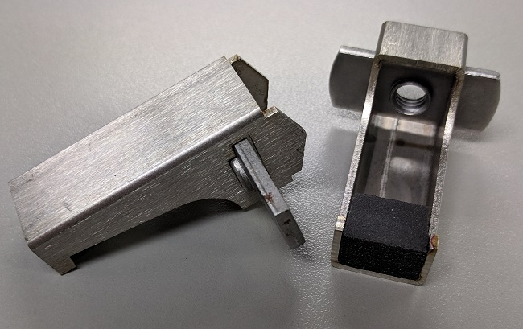
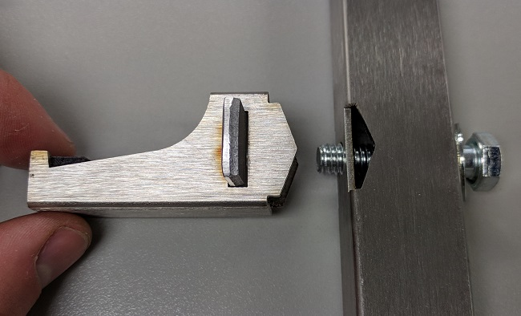
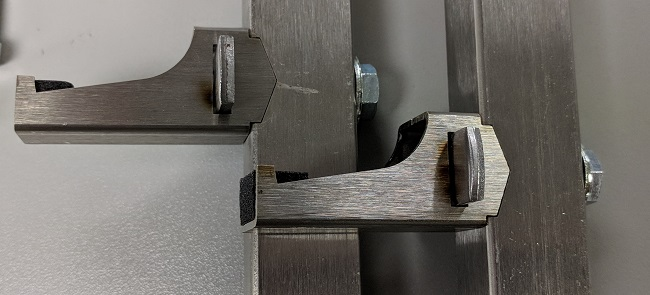
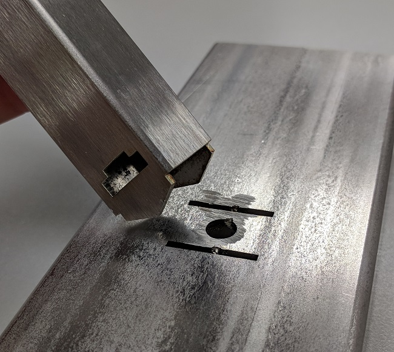
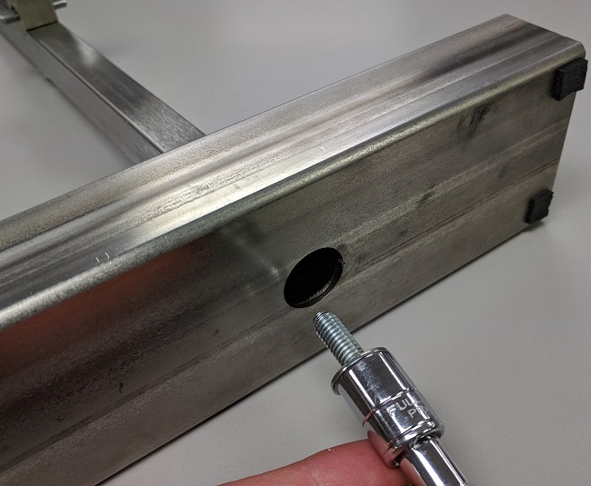
And here it is, all finished:
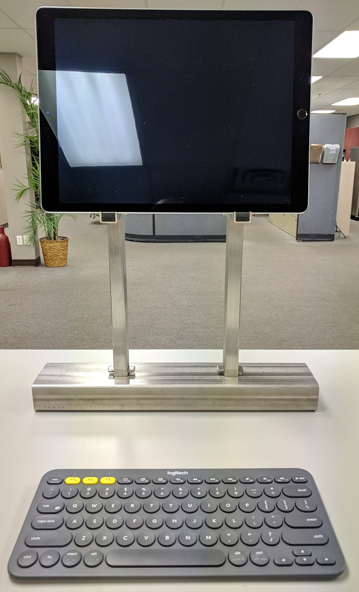
I'm very happy with this little project of mine. It holds up my ipad, which was ultimately the only thing I needed to do. I enjoyed designing within the CQ / Jupyter context, as I was able to quickly prototype designs and get visual feedback instantaneously, while also having a mechanism to keep notes typed up right with the design!
Despite my success here, there are always areas to improve on, a few of which I can think of right now:
process improvements:
design improvements:
That's my design thinking for my ipad stand. I'm glad you've read through my article, I really do appreciate that. If you have any questions or suggestions, I would love to hear them! Please ask away on my Twitter, @RustyVermeer.